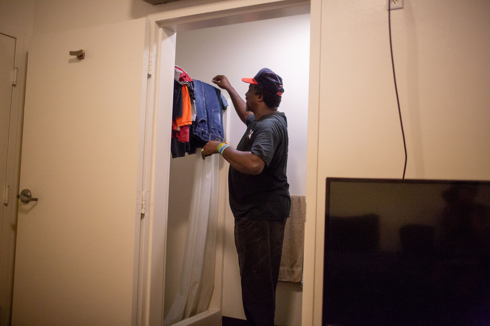

An overhead view of the city-owned lot where Pathways of Hope wants to build permanent supportive housing for Fullerton residents who are chronically homeless. (KPCC)
A skinny, unremarkable, triangle-shaped piece of land has brought a neighborhood in the city of Fullerton to a full boil.
The land is located between a busy thoroughfare and four sets of railroad tracks.
It’s surrounded beyond by middle-class neighborhoods.
City leaders were approached about building an apartment complex on this land.
The building would house about 60 people who are chronically homeless in the area and have a disability, which could include mental illness or a substance abuse disorder.
When neighbors learned about this potential deal, a battle began — the same kind that we've seen in Koreatown, Venice, Sherman Oaks, Irvine. The list goes on and on.
Community meetings were held. Facebook Live posts were streamed. There was a tour of similar developments in OC. There were phone calls. And letters. And angry social media posts. And more meetings and more calls and more letters and then last week … the project imploded, before it even got started.
This is a breakdown of the breakdown. And if you live in California, a similar story might be playing out in a neighborhood near you.
Part 1
“It’s a solution”
A skinny, unremarkable, triangle-shaped piece of land has brought a neighborhood in the city of Fullerton to a full boil.
“That whole end of the property is going to be green space,” says David Gillanders, sweeping his tattooed arm toward the far end of the 2.25-acre lot, which used to house a tomato processing plant and now serves as a city maintenance yard.
“It's going to look great to the people in those houses when they look across (the street) and see that, as opposed to what they're seeing now, which is gravel and orange cones.”
Gillanders is the executive director of Pathways of Hope, an organization that has been providing food and shelter to homeless people in Fullerton and surrounding, north Orange County cities for more than 40 years.

David Gillanders, executive director of Pathways of Hope, a homeless outreach organization serving Orange County, at the proposed site of a new apartment complex for the chronically homeless in Fullerton. (Jill Replogle/KPCC)
As the centerpiece of the lot, Gillanders envisions an apartment complex, in Spanish mediterranean-style architecture, to house around 60 of the city's chronically homeless. The federal government defines “chronically homeless,” as someone who has a disability, including addiction and mental illness, and has been living on the street for at least a year, or experienced homelessness at least four times in the past three years.
The tenants would get their own, subsidized apartment, along with social services like therapy and substance abuse counseling. This model of addressing chronic homelessness, called permanent, supportive housing, has proven to be the best way to get and keep people off the streets.
“It's not a shelter,” Gillanders says, brow furrowed. He's heard the misperception ad nauseum. “It's a solution to a problem everyone has been asking about for a long time.”

There are mixed opinions on a housing project for homeless people proposed for the 1600 block of Commonwealth Avenue in Fullerton. (Kyle Grillot for KPCC)
Homelessness has reached crisis levels in many Southern California communities. And everybody wants a solution.
Part 2
“No One’s Thinking About Us”
"Fullerton is known for its scenic trails," Nina Parker says across the table at a busy restaurant in the city's downtown. A waiter interrupts to drop an ahi sandwich in front of her.
"Now you see tents. Now you see garbage."
Parker and her neighbors Philip and Stephanie Bromley are grabbing lunch before a meeting with the city manager. They live a few blocks from the lot where Pathways wants to build supportive housing for the homeless.
Stephanie Bromley manages a neighborhood Facebook group that has become a forum for complaints about homelessness in the neighborhood, which is loosely known as Little Chapman-Adlena Park, and opposition to the Pathways project.
One recent post reads:
"Hello neighbors.
This morning I had the displeasure of seeing a homeless fellow wearing nothing but half-down jeans enjoying himself on somebody's yard off of King.
As kids were walking down little Chapman to school I opted to pull over in order to read him the riot act until he fixed his pants."
A few weeks prior, Parker delivered a tearful plea to the Fullerton City Council to vote against signing an exclusive negotiating agreement with Pathways. Such agreements are standard, first steps when negotiating with cities for development projects. Most developers won't waste time on a potential site until they have one in place.
"You can't relocate more homeless to our area until you take care of what's wrong right now," Parker told council members, choking up. "This is my home, and I can't let you do this to my home."
Between mouthfuls, Bromley and Parker lay out their reasons why Pathways should house homeless people somewhere else:
Bromley: "I'm concerned that we're going to attract people from other cities and then they're going to become our responsibility."
Parker: "These facilities should be in industrial areas because they are not located close to parks or close to schools."
Bromley: "We spent a lot of money to buy homes and to get our kids to school. And, you know, just to live the American dream, and we feel like our safety and our well-being is being compromised and no one's thinking about us."

Kids splash around at Adlena Park, a few blocks from the site where Pathways of Hope wants to build housing for chronically homeless individuals. Some neighbors say they don’t let their children go to the park alone out of fear of homeless people who sometimes hang out there. (Jill Replogle/KPCC)
Bromley and Parker say they feel compassion for the homeless. Bromley tells me she hands out McDonald gift cards to homeless people she encounters around town. But they're concerned about their kids’ safety, and maintaining the quality of their good, middle-class lives.
They're not the only ones. Several dozen people showed up to a city council meeting in June to rail against David's proposal. Those who spoke in support of the project were fewer and less passionate.
Up until the neighbors spoke at that meeting, the mayor and at least some of the city council members seemed ready to support David's project.
Fullerton — like cities throughout Orange County — is under pressure to house homeless residents.
The county has an ambitious new goal: Every city builds its fair share of 2,700 units of permanent, supportive housing.
Gillanders' project is the plan’s first big test. So lots of people are watching. Will city leaders back it? Here's Council Member Greg Seaborn at that June meeting.
"Frankly, it’s dead in the water unless the neighbors are at least lukewarm supportive and right now, there's not a lukewarm support there. … if this thing goes forward, I know you’d do a great job. I’m convinced of that but you need to convince everyone else of that, too."
So that's Gillanders' task: win over the neighbors. Or at least some of them. And then the city will decide whether to proceed with negotiations.
Can he do it? And if he can't, if his project dies, what does that say about Southern California's chances of getting a handle on homelessness?
The state is home to more than 30 thousand unsheltered, chronically homeless people. If no one wants to house them in their neighborhood, how will we ever get people off the streets?
Parker and the Bromleys head off for their meeting at city hall.
Philip Bromley owns a biotech firm, Virun, which makes nutritional foods and supplements. When he found out that the city was considering giving the land in his neighborhood to Pathways, he told the city he wanted to buy it and open a plant there. His offer has given neighbors who oppose the Pathways project a convenient alternative around which to rally.
Part 3
Can a tour cure Nimbyism?

The Orchard in Santa Ana is a former motel remodeled to house chronically homeless individuals with disabilities. (Jill Replogle/KPCC)
I meet a small group in front of Fullerton city hall to take a tour of permanent supportive housing for homeless people.
I meet a small group in front of Fullerton city hall to take a tour of permanent supportive housing for chronically homeless people in Orange County. City council members and proponents of the Pathways project suggested it might be illuminating for residents to see some existing developments, and get questions answered from their management teams.
Council member Jesus Silva is leading the tour. Kelsey Brewer, the now-former legislative affairs manager for OC's branch of the Association of California Cities is also with us. Brewer is one of the authors of a countywide plan to build 2700 units of permanent supportive housing, spread throughout every city in OC.
Stop 1: Rockwood, Anaheim
Our first stop is the Rockwood Apartments in Anaheim. It's an attractive, 70-unit apartment building right next to Abraham Lincoln Elementary School.
Most of the units are for formerly homeless families. Fifteen of the units are for formerly homeless individuals with a history of mental illness. They all get onsite case management: the "support" in "permanent supportive housing." Danielle Ball, who oversees supportive services for Jamboree Housing, which built Rockwood, shows us around.

Fullerton residents ask questions during a tour of the Rockwood apartments for formerly homeless individuals and families in Anaheim. (Jill Replogle/KPCC)
"All the kids, families, bring chairs out, blankets out, we pass out popcorn and do movie nights out here," she says, walking us through the spacious courtyard, which includes a private playground.
Several of the Fullerton neighbors note how clean and attractive the place is. But they have lots of questions about the tenants and how the apartments are managed. Top of the list: drug and alcohol use.
"Are there any restrictions on alcohol or drug use here?" Pat Ducey asks.
"Um, no," Danielle says, seeming to sense the coming storm. "If we see it in the community and it's causing a problem and a lease violation, then yes, they would get written up.
"We do not do checks for alcohol, we do not do checks for drugs."
This doesn't go over well with Christina Brittain.
At a prior city council meeting about the Pathways proposal, Brittain told council members that she was a long-time volunteer for Pathways and "loved" the organization. Then she vowed to sue if the city let Pathways house homeless people in her neighborhood.
"What I'm hearing from this is that our tax dollars, ultimately, are going towards supporting this," Brittain says. "And that if they're doing drugs in their own (apartment), that's their business.
"If you know about it, you try to help them, but don't force them to get help. … And it's permanent housing so they could live there for the rest of their lives and use drugs in the privacy of their own home. That's crazy."
Ball tries to explain that at Rockwood, like any, regular apartment building, the management can't just barge into someone's unit. And you can't kick someone out for suspected drug use; you'd need proof.
Plus, decades of research show that people who have spent years on the street are much more likely to stay housed if you give them a roof first and then address addiction and other mental health disorders.
It used to be standard practice among homeless aid organizations to require people to earn a place to live by first getting sober while living on the streets. It didn't work. The federal government has promoted a "housing first" model since the George W. Bush administration.
In 2017, 99 percent of the formerly homeless individuals in Orange County in permanent supportive housing remained housed, according to county statistics.
Stop 2: Doria, Irvine
We head to our next site, on newly developed land near the Woodbury Town Center shopping center in Irvine. It's an immaculate, 134-unit complex for low-income residents and formerly homeless individuals with mental illness. It looks like any other new, resort-style apartment complex in Irvine. Stylish architecture; manicured grounds; a pool.
But here, things get even messier on the tour. Some of the neighbors had been live-streaming on Facebook. And the Doria's management won't let them record.
"So I'm going to waste my time having everything sugar-coated by these people?" a livid Shari Carter says outside.
Carter lives a few blocks from the site where Pathways wants to build in Fullerton.
"I'm so hurt and devastated over what's happening to our community," Carter says, holding back tears. "My husband worked hard for that house. And we just want to feel safe and they want to take that away from us?"
Carter is convinced that the Pathways project would ruin her dreams for a peaceful retirement. She does not seem open to being persuaded otherwise. She and her husband get into their truck and leave the tour.
Stop 3: The Orchard, Santa Ana
Our final stop is at a 71-unit former motel that's been converted into housing for former, chronically homeless individuals and couples. It has stylish, eco-friendly landscaping and a huge community food garden out back.
"We have security gates and security guards," says co-owner Kyle Paine, addressing a typical concern.
The Pathways project would also have security. But by this point it's become clear that some of the neighbors don't really care about assurances. They just want Pathways to house homeless people somewhere else.
"It's not that I don't want to help the homeless. I don't want it where it's proposed," says a woman named Cat. She won't give me her last name.
Cat, who was one of the Facebook livers, has generated a local following in Fullerton by posting videos of her "interviewing" homeless people around town. She often asks her subjects if they want help and then berates them if they refuse or waver.
"Get a cell phone, you can call Bridges at Kraemer and get off the streets," she tells one man, who she just met. Bridges is a referral-only shelter that has been nearly booked solid since it opened last year. "I'm tired of my tax dollars going to people who won't f***ing get off the street," she tells the man in the video.

Fullerton resident Gretchen Cox asks a question during a tour of The Orchard apartments in Santa Ana. (Jill Replogle/KPCC)
Back at city hall, Gretchen Cox says the tour was "very educational." It's the most positive comment I hear. Cox took copious notes on the tour to share with friends who live in the neighborhood where Pathways wants to build. (She lives in Fullerton, but not in the Little Chapman-Adlena Park neighborhood.)
"Seeing, first of all, how nice these places are, built within various types of communities," she says, "the one in Irvine, I mean, who would know that it was there?"
She also notes that the developments didn't seem to be magnets for people still living on the streets.
But she's troubled that she doesn't see an incentive for people to move on from permanent supportive housing and become more independent.
"I'm getting a little bit more open-minded about the need to deal with the issue that we have, and it's clearly an issue here. But the fact that these places didn't talk about preparing these people for a next step … it's like going to the beach with a bag of french fries. … When the french fries run out and you've got now 5,000 seagulls flocked all over you, what are you going to do?"
Curtis Gamble was homeless in Fullerton for eight years. Now he’s an advocate for the homeless, rarely missing a city council or county Board of Supervisors meeting where homelessness is discussed. (Kyle Grillot for KPCC)
Part 4
Fullerton's homeless
If you want to know about being homeless in Fullerton, Curtis Gamble is your guy.
"That bench right there," Gamble says, pointing out bus bay #3 at the Fullerton Transportation Center. "That's where I used to sleep."
After he lost his job as a bus driver, Gamble slept on that bench for eight years — sitting up, most of the time, because the city installed armrests that made it impossible to lay lengthwise.
Then Gamble won a legal settlement with the city in 2016 over Fullerton's failure to zone for homeless shelters, which is state law. He used his share of the cash settlement to get an apartment.

Curtis Gamble talks with an acquaintance outside of First Christian Church in downtown Fullerton. The church offers free meals every Wednesday evening. (Jill Replogle/KPCC)
The bus depot is where a good number of the city's homeless population sleeps, hangs out and panhandles.
On the night Gamble shows me around, an elderly man nods off on the same bench where Gamble used to sleep. A group of people I met earlier at a soup kitchen socialize in another bay. They laugh at a woman sitting next to a pile of tattered bags, belting out raunchy lyrics at the top of her lungs.
In the middle of the scene is a lamp post decorated on colored paper and topped with fake flowers, and next to it, a picture of Kelly Thomas.
Thomas was 37 and living on Fullerton's streets when he died at the hands of Fullerton police officers in 2011. A security camera caught the encounter on tape telling officers he couldn't breathe as they pinned him down, begging for his life and calling out for his dad. The footage, which you can find on the internet, is extremely disturbing.
Two officers were charged and acquitted in his death; charged against a third officer were dropped. There were big protests. The police chief resigned. Three city council members were recalled. And Kelly's parents won multi-million dollar settlements.
But the whole, terrible incident – and the fall out – didn't address the large number of people like Kelly, who was schizophrenic, living on the streets.
A few blocks away from the bus depot, volunteers serve up spaghetti at First Christian Church for anyone who needs a meal. Jacquie Nolan says they serve between 100 and 120 people every night, though not all are homeless.

People stand in line for dinner at First Christian Church on Sept. 26, 2018. (Kyle Grillot for KPCC)
Gamble keeps track of the time, day and location of all the free meals in Orange County in a one-page, homeless resource guide. He also notes places you can take a shower and get help finding housing. He carries copies of the guide with him to hand out.
Gamble's guide is part of the triage going on all over Southern California as the region grapples with a major crisis in homelessness. The number of people homeless in Orange County rose 13 percent from 2013 to 2017, according to the last official count.

Gamble carries around one-page homeless resource guides to hand out to people in need. (Kyle Grillot for KPCC)
In Los Angeles county, homelessness rose 34 percent over that time period, though it has since dropped 3 percent, according to a 2018 count.
An unusually large percentage of those experiencing homelessness here are unsheltered, meaning they live on the street. California, as a whole, accounted for nearly half of all unsheltered people in the country in 2017, an estimated 91,642 people, according to the U.S. Department of Housing and Urban Development.

Gamble in his studio apartment in downtown Fullerton. He was able to rent the apartment with the money he got from a settlement with the city of Fullerton over the city’s failure to zone for homeless shelters. (Kyle Grillot for KPCC)
If you want to know about being homeless in Fullerton, Curtis Gamble is your guy.
After dinner, I talk to Jason Nielsen, a 43-year-old, Fullerton native with spiky hair and a prominent nose ring. His plummet into homelessness started when his stressful, graveyard-shift job at a food processing plant got to be too much. His loud roommates wouldn't let him sleep in the daytime.
Nielsen says he packed up his stuff, put it in storage, and went off all his mental health medications, thinking it would help calm his anxiety.
"When you're under a lot of distress, and stress, you do things you normally wouldn't do," he says.
For several years, he filtered in and out of shelters, crashed for awhile with a relative in Nevada, who turned out to be an alcoholic, and slept in his car.
Just weeks ago, Jason moved into his own apartment in a permanent supportive housing complex built by an organization called A Community of Friends. It's in an industrial part of Fullerton, a location that Dora Leong Gallo, who leads the organization, said was marginally acceptable.

Needs caption (Jill Replogle/KPCC)
"We want to make sure that people are in an area where they can thrive," Gallo said, "and that means access to amenities that all of us want: schools, grocery stores, transportation."
The site does have those things, but it's missing the kinds of amenities you get in a residential neighborhood, likes parks. And neighbors. The apartment complex, which is modern and stylish, sits between a gas station and an office building. Across the street is a glass factory and another gas station.
ACOF originally hoped to build the apartments in the same neighborhood that is fighting off Pathways' similar proposal now. The neighbors fought against the earlier proposal, too.
Because of delays, the apartments Nielsen now lives in took five years to build and cost about $1 million dollars more than planned, Gallo said, much of it public funds.
Still, Fullerton has done more than many Southern California cities to address homelessness. Nielsen and 35 other formerly homeless and low-income individuals and families are now housed.
The city also hosts a winter emergency shelter (though not by choice, it's owned by the National Guard), which is located a mile from where Pathways wants to build permanent supportive housing.
The armory shelter, as it's known, was not supposed to reopen this winter, under a deal struck after Fullerton agreed to pay for part of the Bridges at Kraemer Place shelter in Anaheim. But the city was recently asked to host it again, while nearby cities work to get more permanent shelters in place by next spring.

Gamble checks on his clothes drying in the bathroom of his studio apartment. (Jill Replogle/KPCC)
Still, a recent count found 230 people sleeping outside in the city. Although experts say more shelters are needed, if there's no housing to follow, people are likely to return to the streets.
Nielsen is the type of person permanent supportive housing is intended to help — homeless for more than a year and struggling with mental illness.
I ask him, even though it feels like a stupid question, if it's good to finally have his own place.
"Yes, yes it does," he says. "It gives you a starting point where you can rebuild your life."
Part 5
Homelessness 101
David Gillanders picks up the buzzy microphone at the Fullerton maintenance yard community room and introduces himself. It's the first community meeting Pathways is holding after city council members tasked the organization with warming residents to the idea of housing 60 chronically homeless individuals in their neighborhood.

Jason Phillips, a pastor at Sojourners Church in Fullerton and a supporter of the Pathways project, emcees a community meeting about the project on Aug. 16, 2018. Phillips also lives in the Little Chapman-Adlena Park neighborhood. (Jill Replogle/KPCC)
Thanks everyone for being here, I'm David Gillanders, executive director of Pathways of Hope.
David had decided to start off his outreach campaign by offering a basic education on homelessness.
"So what we wanted to do was have Becks Heyhoe from Orange County United Way do her Homelessness 101 curriculum as we advertised on the flyer," he says.
Heyhoe queues up her slides on the projector. Who are Orange County's homeless?; Why are they homeless?; How much does homelessness cost taxpayers?
It's a two-hour presentation — condensed for the Fullerton neighbors — that Heyhoe gives regularly to city leaders, philanthropists and everyday residents.
Much of the Orange County specifics are based on a 2017 UC Irvine study that busted several common myths.
• Nearly 70 percent of homeless people surveyed for the study were long-term OC residents, not new arrivals
• Survey-takes cited the inability to find or retain a job or affordable housing as the top reasons for becoming homeless
• Providing supportive housing to a person experiencing chronic homelessness is an estimated 40 percent less expensive than leaving them on the streets, where some are a heavy financial burden on cops and hospitals.

Fullerton residents listen as David Gillanders answers questions about the proposed permanent supportive housing development. (Jill Replogle/KPCC)
For the most part, people listen politely to Heyhoe's presentation. But about a quarter of the audience leaves before it's over, some of them in a huff. I catch up with one woman in the hallway. She won't give me her name because she's worried about homeless people coming after her.
"They'll try and figure out where we live, they'll be camping on our lawns," she said, her agitation growing along with her list of potential retribution, "they'll break bottles in our street, they'll leave needles strewn around."
She took issue with the notion that the lack of affordable housing is a major cause of homelessness in OC.
"You're homeless because you made bad choices and you ended up there," she said. "So, we're going to go to the city council meeting to protest" the Pathways project.

Mychael Blinde, development manager for Pathways, greets meeting attendees. (Jill Replogle/KPCC)
The second community meeting was held a week later. Gillanders displayed questions on the overhead projector that neighbors had emailed prior to the meeting.
Will you allow residents to do drugs?
Gillanders says it's the single biggest question Pathways gets about its permanent supportive housing model. He explains that potential tenants won't be barred because of a history of drug or alcohol abuse. But they will get help getting sober as soon as they're tenants.
He also says Pathways "won't turn a blind eye to criminal activity."
Why do these homeless people get to live in free housing while I have to work hard every day to pay for housing on my own?
Tenants in permanent supportive housing pay a portion of their monthly income toward rent. Most have a mental illness or physical disability. Addiction to drugs or alcohol is a mental illness.
Gillanders talks about a man named RJ who was shot in the head during a home invasion. "RJ lived on the riverbed because he had chronic migraines that do not stop. And he cannot work and he will never work again a day in his life." Gillanders says RJ is a prime candidate for permanent supportive housing.
Part 6
"It's not souplessness"
One day after the meetings, I sit down for a long chat with Gillanders, on the porch of a shelter run by Pathways near downtown Fullerton. I had questions.
Replogle: How do you think the community meetings are going?
Gillanders: I think there's still a lot of misunderstanding. A lot of our homeless folks on the street will not be able to bootstrap themselves through homelessness.
At one of the meetings, Gillanders had talked about a prime candidate for permanent supportive housing: a man named RJ. He ended up homeless, with debilitating migraines, after he was shot in the head during a home invasion.
"RJ lived on the riverbed because he had chronic migraines that do not stop," Gillanders said at the meeting. "He will never work again a day in his life."
Show me the math, the calculus on how many people are going to get sober on the street. Demonstrate for me how homelessness is ended with anything other than a set of keys, a lease and a place to call home.
Replogle: What do you make of people who say they love Pathways and volunteer with the organization, but still oppose housing the homeless in their neighborhood.
Gillanders: It's not souplessness, It's not clotheslessness. It's not showerlessness. It's homelessness.
Yes, handing out toys to families matters. Yes, everyone's got to eat. But while you're helping maybe pacify or improve someone's day or get their stomachs full, that is not the same as ending homelessness. It's just not.
Replogle: This must be the worst part of your job, trying to convince residents not to oppose your efforts to get people off the streets.
Gillanders: I'm not gonna tell you it's not exhausting. But it's also exciting. We have a massive need for this kind of housing. Most people don't even argue that at this point.
It is, in my mind, a moral issue of a country that's the richest that's ever existed, living in a county that is so wealthy, that can't figure out a way to provide for 2700 people who are really, really vulnerable and die on the streets every year.
You add all those things up and it's hard to say that this isn't the right thing to do. But maybe you don't want it in your neighborhood. Okay, well, we can talk about that piece of it.
I have a hard time understanding Gillanders' sanguinity on this last point. He says the lot where he wants to build in Fullerton is the only available option. Pathways has a modest budget. It needs the city to donate the land.
Part 7
There goes the neighborhood
Housing reporter Matt Tinoco and I decide to canvass the neighborhood around a supportive apartment complex for formerly homeless people that's been in Anaheim since 2008. I wanted to test out the fears I'd heard from the Little Chapman-Adlena Park neighbors — about declining property values and rising crime — on an area that's had a decade to adjust to its formerly homeless neighbors.
The 25-unit Diamond apartments faced fierce opposition when they were proposed. It was Anaheim's first experience with permanent supportive housing and only the second in the county.
Community opposition delayed the project for two years.
Ten years later, it's the nicest building on a block of aging, small apartment buildings and single-family homes.

Needs a caption (Jill Replogle/KPCC)
So I was looking at the map. Yeah I was just looking at it.
Tinoco and I split up to start knocking on doors. Tinoco catches up with John Rutherford, who's out walking his dog. His house is right across the street Diamond. He's lived there for 20 years.
"They get the police down there every once in awhile," he says. "I don't know why. They've had a couple fights and a couple things going on like that."
John says he's met some of the residents on walks.
"I guess they're pretty strict with them," he says. "A couple of them complained to me that they take them out of the house and inspect their house, make sure they're keeping their apartments clean and everything.
"I haven't had too much trouble with them, to be honest with you."
Residents get their apartments inspected as a requirement of the federal Low-Income Housing Tax Credit, which partially funds Diamond and many other affordable and supportive housing developments across the country.
Anaheim spokesperson Mike Lyster later confirms that police do get called out to Diamond more than to other apartments. But he says that's because the management runs a tight ship, and because the city wants to make sure there aren't any problems for the neighborhood.
Matt and I talk to about 30 neighbors over the course of several hours. Most people tell us they didn't know that formerly homeless people lived at Diamond.
"I thought they were just regular apartments," says Marta Lozada in Spanish. She's lived in her house for almost 10 years and says the neighborhood is tranquil.
Still, she doesn't feel comfortable letting her adolescent kids walk to school alone because of the RVs, in which homeless people live, parked along their route.
"They run ahead and leave me behind, and I don't know if someone is going to pull them into their car," she says.
A large body of research validates the effectiveness of permanent supportive housing in keeping people off the streets. Less research has been done on how such housing affects neighborhoods. But there is some.
Ingrid Gould Ellen at New York University's Furman Center for Real Estate and Urban Policy authored a study that looked at the effect on nearby property values of all supportive housing built in New York City from 1985 to 2003 — 7,500 units in 123 developments spread across higher and lower density parts of the city.
She found that property values within 500 feet of supportive housing tend to increase more than those in the surrounding area in the years following a supportive housing development's completion. Houses a bit further away, between 500 and 1000 feet from supportive housing, initially dropped during construction, but then rose after completion.
Gould Ellen hypothesizes that the "diluted" price gain might be because the benefits of supportive housing "are outweighed by community uneasiness about the housing" until the new tenants become, well, just neighbors.
"We found no evidence that the homes near to supportive housing suffered because of their proximity to supportive housing," Gould Ellen told me on the phone.
Other studies, in Philadelphia and across Delaware, came to similar conclusions.
Part 8
A crisis of faith
Father Dennis Kriz leads a prayer session before a community meeting to discuss Pathways of Hope's supportive housing plan. About 20 people lean against a wall next to the empty lot where the apartments would be built, following along in prayer.
"Here we remember that Jesus came to his hometown and he proclaimed good news, above all, to the poor," he says.
Kriz and the other leaders at St. Philip de Benizi church let a few dozen people sleep in the large parking lot of the church, which is about a mile away, every night. It wasn't planned, Kriz says, but people started showing up and church leaders didn't kick them out.
And then more came.
"I started to see this, honestly, like a slow-moving refugee crisis," Kriz says.
Residents opposed to the Pathways housing proposal often cite the church's impromptu, homeless safe haven as both an example of how west Fullerton already does its fair share to help the homeless, and as a magnet attracting undesirables to their neighborhood.

Church rules flyer
The church held a community meeting earlier this year to float the idea of starting a more formal, safe parking program.
"We had some people who are radically opposed to it," Deacon Richard Doubledee said. "There was a point where someone tried to take over the meeting … and one of the parishioners stood up and defended what we were doing."
Still, Doubledee conceded that even some of the faithful don't like the idea.
"We don't know that we've overcome all the fears," Doubledee said. "Until you see it work, you're going to be afraid."
Part 9
The vote that didn't happen
Just weeks before the vote, Gillanders pulled his request to negotiate with the city over the property where he hoped to build supportive housing. Too much community opposition, which meant the votes on city council might not be there. There's an election coming up, after all.

Opponents of the Pathways supportive housing proposal wear yellow shirts at a Fullerton City Council meeting on Aug. 12, 2018. Opponents spoke against the project at every meeting held in recent months. (Jill Replogle/KPCC)
Money is pouring into LA to build supportive housing. And Southern California cities could have even more funds to build this type of housing if voters pass initiatives on the upcoming ballot. The question is: where can we build it?
"It takes leadership and we have got to get to a place where this is less about trying to make everyone happy, and more about problem solving," Gillanders said.